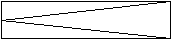
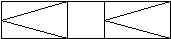
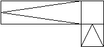
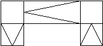
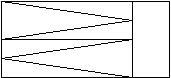
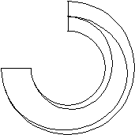

Ramps which are subdivided into more than two landings have to be
defined by the geometry only. Also ramps with non-regular shapes have to be
defined by the geometry only. The type of such stairs is OTHEROPERATION.
| Enumerator |
Description |
Figure |
| StraightRunRamp |
A ramp - which is a sloping
floor, walk, or roadway - connecting two levels. The straight ramp consists of
one straight flight without turns or winders. |
 |
| TwoStraightRunRamp |
A straight ramp consisting of
two straight flights without turns but with one landing. |
 |
| QuarterTurnRamp |
A ramp making a 90° turn,
consisting of two straight flights connected by a quarterspace landing. The
direction of the turn is determined by the walking line. |
 |
| TwoQuarterTurnRamp |
A ramp making a 180°
turn, consisting of three straight flights connected by two quarterspace
landings. The direction of the turn is determined by the walking line. |
 |
| HalfTurnRamp |
A ramp making a 180°
turn, consisting of two straight flights connected by a halfspace landing. The
orientation of the turn is determined by the walking line. |
 |
| SpiralRamp |
A ramp constructed around a
circular or elliptical well without newels and landings. |
 |
| UserDefined |
Free form ramp (user defined
operation type) |
|
| NotDefined |
|
|